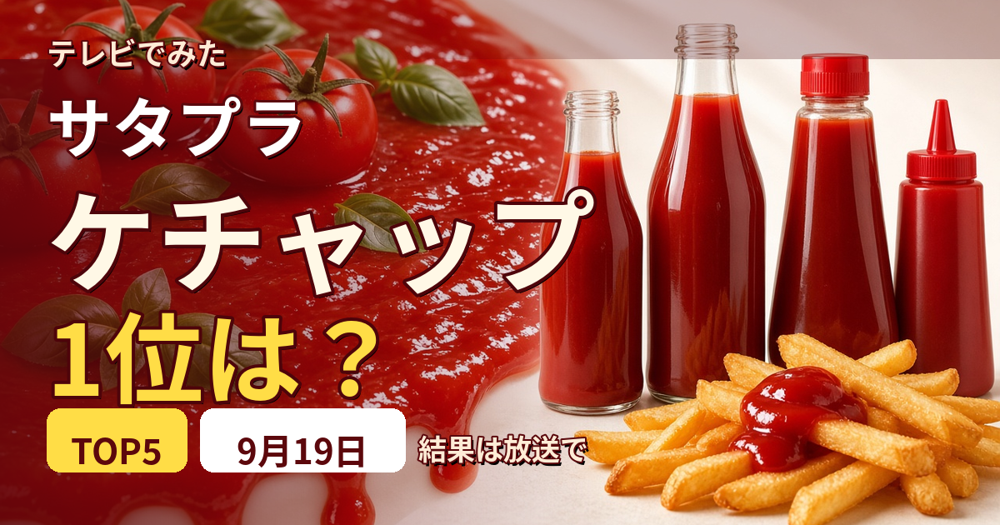

エントリー確認
カゴメ トマトケチャップ
カゴメ トマトケチャップ 500g

楽天のレビュー 51件・平均 4.65（よろずやマルシェ／2026年9月19日 06:50時点 375円）
テレビ紹介商品の記録メディア
この記事には広告・アフィリエイトリンクが含まれる場合があります。
2026年9月19日（土）放送
今回のテーマはケチャップ／結果はTOP5形式で発表
これは放送前の記事です。番組公式で確認できている今回のテーマ・出演者だけを載せています。ケチャップの順位・商品名・価格は、放送でまだ発表されていません。「結局どのケチャップが1位だったのか」は、放送を見ないとまだ分かりません。このページは同じURLのまま更新します。放送後、確認できた内容から追記します。
1位の商品を見る
放送前に判明
13商品を比較
この枠には広告・アフィリエイトリンクが含まれます。番組公式が放送前に公開したエントリー商品です。順位はまだ発表されていません。価格は2026年9月19日 06:50に楽天で確認した時点のもので、変わることがあります。
今回の「ひたすら試してランキング」はケチャップ13商品の比較です。番組公式がエントリー商品を公開しており、そのうち8商品がこちらです。ほかに有機トマトケチャップやフルーツケチャップも並んでいます。
エントリー確認
カゴメ トマトケチャップ
楽天のレビュー 51件・平均 4.65（よろずやマルシェ／2026年9月19日 06:50時点 375円）
エントリー確認
ハインツ トマトケチャップ

楽天のレビュー 57件・平均 4.47（楽天24／2026年9月19日 06:50時点 571円）
エントリー確認
カゴメ トマトケチャップ ハーフ

楽天のレビュー 0件・平均 0.0（大将もビックリ!SCB／2026年9月19日 06:50時点 359円）
エントリー確認
ハインツ ピクルスのケチャップ

楽天のレビュー 0件・平均 0.0（Costopa／2026年9月19日 06:50時点 1,665円）
エントリー確認
デルモンテ トマトケチャップ

楽天のレビュー 4件・平均 4.5（ココデカウ／2026年9月19日 06:50時点 389円）
エントリー確認
デルモンテ リコピンリッチ

楽天のレビュー 19件・平均 4.79（楽天24／2026年9月19日 06:50時点 519円）
エントリー確認
清水屋 有機トマトケチャップ（横浜屋本舗）

楽天のレビュー 13件・平均 4.77（にっぽん津々浦々／2026年9月19日 06:50時点 624円）
エントリー確認
COUNTRY HARVEST 有機100 トマトケチャップ

楽天のレビュー 34件・平均 4.94（楽天24／2026年9月19日 06:50時点 704円）
エントリー確認
イカリソース 特級トマトケチャップ

楽天のレビュー 1件・平均 5.0（くまの中谷商店／2026年9月19日 08:12時点 278円）
放送でTOP5が発表され次第、順位を同じページに追記します。
放送で発表
総合1位
この枠には広告・アフィリエイトリンクが含まれます。順位は放送で発表されたものです。価格は2026年9月19日 08:40に楽天で確認した時点のもので、変わることがあります。
13商品を5項目で採点した合計点で、総合1位になったのは高橋ソース カントリーハーヴェスト 有機100 トマトケチャップでした。「そのままの味」でも1位を取っており、素材そのものの評価がそのまま総合につながった形です。
カゴメ・ハインツ・デルモンテという大定番を抑えての1位です。高橋ソースは食品業界でいち早く有機食材を取り入れたメーカーで、トマトだけでなく玉ねぎ・砂糖・酢・香辛料まで有機原料を使っていると番組で紹介されました。爽やかさの決め手は独自ブレンドの2種類の酢です。
総合1位
高橋ソース カントリーハーヴェスト 有機100 トマトケチャップ

楽天のレビュー 2件・平均 5.0（にっぽん津々浦々／2026年9月19日 08:40時点 1,270円）
2位以下は発表され次第、このページに追記します。
放送で発表
5項目すべて発表
この枠には広告・アフィリエイトリンクが含まれます。項目別の順位は放送で発表されたものです。総合順位はまだ発表されていません。価格は2026年9月19日 08:20に楽天で確認した時点のものです。
採点は5項目で行われ、項目ごとに1位が出ます。総合順位は5項目の合計点で決まるため、項目別の1位がそのまま総合1位になるとは限りません。
そのままの味 1位
高橋ソース カントリーハーヴェスト 有機トマトケチャップ
楽天のレビュー 2件・平均 5.0（にっぽん津々浦々／2026年9月19日 08:20時点 1,270円）
卵との相性 1位
ジロロモーニ 有機トマトケチャップ

楽天のレビュー 12件・平均 4.5（楽天24／2026年9月19日 08:20時点 534円）
炒めたときの味 1位
清水屋 有機トマトケチャップ（横濱屋本舗）
日本で初めてトマトケチャップを作ったとされる清水屋。味の決め手は香辛料のナツメグ。
楽天のレビュー 13件・平均 4.77（にっぽん津々浦々／2026年9月19日 08:25時点 624円）
コストパフォーマンス 1位
キッコーマン デルモンテ トマトケチャップ
1963年発売のロングセラー。高品質なトマトを一度に大量調達することでコストのよさを実現している、と番組で紹介されました。
楽天のレビュー 4件・平均 4.5（ココデカウ／2026年9月19日 08:30時点 389円）
煮たときの味 1位
ハインツ ピクルス味ケチャップ（パウチタイプ）

ナポリタンなど煮込みで高評価。番組では5項目の最後の評価項目として紹介されました。
楽天のレビュー 0件・平均 0.0（ベイシア楽天市場店／2026年9月19日 08:30時点 2,090円）
5項目の1位がすべて出そろいました。総合順位は5項目の合計点で決まります。発表され次第このページに追記します。
放送で確認
放送中
エントリーは13商品。カゴメ・ハインツ・デルモンテといった定番に加えて、イカリソースなどソースメーカーの商品、さらにスーパーのオリジナルブランドまで入っています。今年の新商品や個性派も加わり、番組は「まれに見る大混戦」と紹介しています。
採点は5項目を各10点満点で、合計点から総合順位を決めます。
審査には2人の料理人が加わっています。ピアットスズキの鈴木さん（14年連続でミシュランガイド一つ星を獲得）と、レストラン大宮の大宮さん（東京・浅草の洋食店）です。
出典はMBS/TBS系「サタデープラス」2026年9月19日放送。順位は放送の進行にあわせて追記します。
放送内容
ランキング結果は未発表
MBS公式サイトの次回予告によると、2026年9月19日（土）あさ7時30分からのサタデープラスは、次の内容が予定されています。
ゲストは尾上松也さん、鈴木杏樹さん、堀田真由さんです。
出典はMBS「サタデープラス」番組公式サイトの次回予告欄（2026年9月18日確認）です。個別の商品名・メーカー・順位は、この予告には記載されていません。放送内容は変更になる場合があります。
コーナー紹介
MBS公式サイトは、このコーナーを「サタプラ独自の方法で毎回１つのテーマに沿った商品を長時間かけて徹底調査するコーナー」と案内しています。毎回1つのテーマを設定し、時間をかけて商品を比較したうえでTOP5を発表するという形式が、回を追って続いています。
直近の回のテーマは次のとおりです。
直近の9月12日「冷凍麺」の回では、1位はリンガーハットの「リンガーハットの野菜たっぷりちゃんぽん」（番組調べ570円）でした。このように、テーマに沿った複数商品を比較してTOP5を出す、というのがこのコーナーの基本形です。今回のケチャップ回で、どの商品が何位になるかは、放送前の時点ではまだ分かりません。
コーナー説明・過去のテーマ・9月12日の結果は、MBS「サタデープラス」番組公式サイトの「ひたすら試してランキング」欄（2026年9月18日確認）に基づいています。
ケチャップのあとに
この枠には広告・アフィリエイトリンクが含まれます。ここで挙げているのは番組に出たものではありません。ケチャップを買ったあとの使い道としてまとめています。価格は2026年9月19日 05:45に楽天で確認した時点のものです。
ケチャップを1本買って、最初に作るものはだいたい決まっています。オムライスです。ところがオムライスは、ケチャップの良し悪しより卵とチキンライスで決まってしまう料理でもあります。1位のケチャップを手に入れても、そこだけでは完成しません。
チキンライスは玉ねぎを炒めて米と具を合わせ、味を決めるまでに手間がかかります。卵も、半熟に包むか薄焼きで巻くかで別物になります。ここを既製品に任せると、ケチャップの差が素直に出ます。

楽天のレビュー 35件・平均 4.49（ブランド太陽卵直送 落水正商店／2026年9月19日 05:45時点 2,780円）

楽天のレビュー 13件・平均 4.92（Smile菓彩／2026年9月19日 05:45時点 1,650円）
もう一方の答えは、自分で作らないことです。オムライスは専門店の味が家庭と大きく違う料理で、冷凍で取り寄せられる名店があります。大阪の「北極星」はオムライス発祥を名乗る店で、「ポムの樹」は全国に店を構えるオムライス専門店です。

楽天のレビュー 11件・平均 4.64（お届けストアplus／2026年9月19日 05:45時点 5,600円）

楽天のレビュー 10件・平均 4.3（お届けストアplus／2026年9月19日 05:45時点 3,200円）

楽天のレビュー 7件・平均 3.71（産直お取り寄せNセレクト／2026年9月19日 05:45時点 5,508円）
三つめの答えは、店に行くことです。オムライスは卵の火入れが全ての料理で、専門店と家庭でいちばん差が出るのがここです。ケチャップの1位が決まったら、まず店の味を確かめてから家で作る、という順番もあります。
東京
大阪
全国
店の説明は各店の公式情報によります。ここに挙げた商品は番組で紹介されたものではありません。
見たあとに
9月19日の放送後、このページに次の情報が加わります。このページは同じURLのまま更新するので、ブックマークしておけば放送直後にここで結果を確認できます。
掲載するのは、番組公式かメーカー・販売元の公式情報で確認できたものだけです。放送前の時点で商品名や順位を推測して書くことはしません。
MBS「サタデープラス」番組公式（次回予告欄・ひたすら試してランキング欄）
当サイトは番組公式サイトではありません。放送内容は変更になる場合があります。